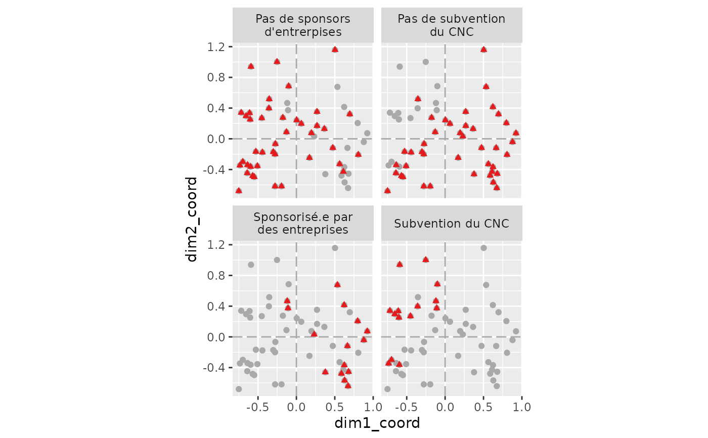

Visualiser les positions des individus en fonction des modalités
Source:R/nuage_individus_facette.R
nuage_individus_facette.RdCette fonction permet de faire apparaître plusieurs fois le nuage d'individu en colorant à chaque fois les individus qui partagent une même modalité.
Usage
nuage_individus_facette(
resultat_individus,
variables_a_representer,
forme = 17,
couleur = "#e41a1c",
longueur_max_labels = 20,
...
)Arguments
- resultat_individus
Un tableau de donnée avec les coordonnées des individus qui a été produit par extraire_individus(). La fonction prend également en charge un résultat d'ACM directement si besoin.
- variables_a_representer
La liste des variables à représenter : on si on souhaite sélectionner le
genre, laclasseet leniveau_de_revenuon peut par exemple écirec(genre, classe, niveau_de_revenu)- forme
Quelles formes pour les individus qui partagent une même modalité ? Par défaut un triangle. Doit-être un nombre, voir la documentation de ggplot sur les "shapes" pour les possibilités.
- couleur
Quelle couleur doit-être utilisée ? doit-être une chaiîne de caractère qui encode la couleur comme "#e41ac" ou "yellow" par exemple.
- longueur_max_labels
Longeur maximum des labels de chaque facette. Par défaut chaque label ira à la ligne au bout de 20 caractères.
- ...
Arguments supplémentaires pour les utilisateurs avancés qui seront passés à ggplot2::facet_wrap()
Examples
res.ACM <- createurs_de_contenus_pol |> ACM()
#> Toutes les variables sont actives
res.ind <- res.ACM |> extraire_individus()
res.ind |>
nuage_individus_facette(variables_a_representer = c(CNC, partenariat_entreprise))
#> Warning: Ignoring unknown parameters: `taille`
